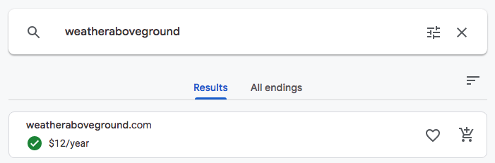

Site Name: weatheraboveground.com
Domain Status: Available
via: domains.google

Instructions: The site name is the simply the name of the organizational site and your proposed domain for the site. You cannot use "The Weather Site" nor "Weather Site". Even though we will not be obtaining/purchasing nor actually using this domain for the project, you will be required to research the domain name to check on its availability and cost. Use https://domains.google (Links to an external site.) or a domain registrar of your choice to research and obtain this information. The domain name must be available.
Instructions: The site purpose provides a statement about the purpose of the website drawing upon the client's functional specifications, the industry and any fictitious but viable goals that you deem to be reasonable for a community site that provides weather information. The site purpose should attempt to provide scope to the website in describing what services it provides. Typically students might leave this section lacking by not talking about perceived content
Instructions: The site purpose provides a statement about the purpose of the website drawing upon the client's functional specifications, the industry and any fictitious but viable goals that you deem to be reasonable for a community site that provides weather information. The site purpose should attempt to provide scope to the website in describing what services it provides. Typically students might leave this section lacking by not talking about perceived content

Instructions: The site map is typically a sketch of all the pages and references on the site and is derived from the customer's functional specifications. The hierarchical relationship is illustrated and will drive the site navigation and links. Depending on the project, these site maps can be complex. Note that the site map for the weather project is fairly simple and you wish to elaborate on some additional pages regardless of the given site description.